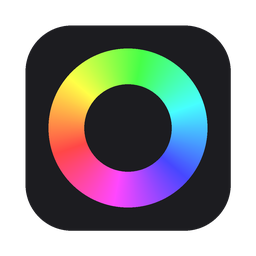

💾
Straight from the card
Insert your SD card and Preset Picker jumps to it. Raw previews load instantly from the camera's own embedded JPEG.

Preset PickerPreset Picker opens your latest shoot straight from the memory card. Choose a Lightroom preset for each photo with a live before/after, then export files that open in Lightroom with the look already applied.
Insert your SD card and Preset Picker jumps to it. Raw previews load instantly from the camera's own embedded JPEG.
Photos are grouped by the day they were taken (from EXIF, not file dates). Pick a day or drag out a date range.
Open any shot big and drag the split to compare. Preview your presets' tone, colour grading, HSL, grain and vignette.
Each photo is copied with an XMP sidecar holding its preset. Import the folder and your raw files open already edited.
Pick your card or folder, a shoot day, and the folder with your exported .xmp presets.
Set a preset per photo, or select a batch and apply one look to all. Check it in the large before/after view.
Get a new folder on your Desktop. Import it into Lightroom and every raw photo carries its preset.
Latest version
Windows 10 & 11 · every chip type
No install rights? Get the portable zip instead. Extract it before opening.
macOS 11 or later · Apple Silicon
This Mac looks like it has an Intel processor. Preset Picker currently needs Apple Silicon.
Lightroom reads preset sidecars for raw files (NEF, CR3, ARW, DNG…). For JPEG and HEIC photos, apply the preset inside Lightroom.